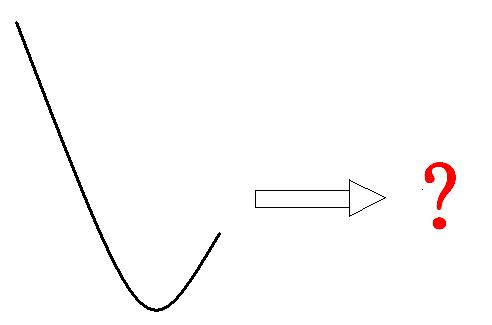

第120篇•教你炒股系列32：左侧挖掘牛股的方法（4）
谷为陵
左侧交易能否成功，要同时具备两个条件：一是能够买在股价底部左侧附近，二是股价能够在探底后很快脱离底部而上涨。因此，成功的左侧交易需要抄到一个真实的底部（简称“真底”），而绝不能是一个虚假的底部（简称“假底”）。
所谓真底，就是股价在跌至某个价位后能够止跌，且止跌后股价能够大幅上涨的价格区间，它或者是一个V型底，或者是一个平底。两类真底的示意图如
下：
所谓假底，就是股价在跌至某个价位后虽能够止跌，但止跌后股价却不能够大幅上涨的价格区间。假底也有两种形态：一是小V型底形态，股价在形成一个小底后继续下跌，直至跌破小底的最低价；二是平底形态，股价在见底后形成一个盘整区域，但根本涨不动，其后股价继续下跌，直至跌破平底的最低价。两类假底的示意图如下：
可见，真底和假底的本质区别在于见底后股价能否大幅上涨，能够大幅上涨的就是真底，不能够大幅上涨的就是假底。也就是说，决定股价底部是一个什么性质的底部，不在于底部左侧的下跌过程，而在于股价右侧的上涨过程。同样的左侧下跌形态，因右侧涨跌不同而会使该底体现不同的性质。
如，当只给出下图的左侧下跌和底部的组合形态的时候，你能够判断出该底是何性质的底部吗？

我相信你不能，也没有人能。要知道该底的性质，并不由图中已经完成的股价走势决定，而是由未来的股价走势决定，不同的未来股价走势将会使该底形成以上2种真底或者2种假底中的一种。
所以，通过以上的讨论，我们应该知道，以后我们再谈股价是否见底的时候，就要搞清楚股价见的是什么底，是真底，还是假底。但绝大多数投资者并不明白这个道理，他们真假底不分，见到底就抄，因真底数量少，而假底数量多，在多数情况下抄到的是假底。
左侧交易必须要抄到真底，那么，形成真底的条件是什么呢？
（未完待续）